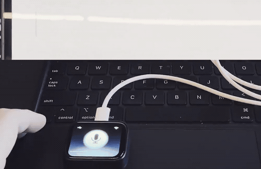

Hold the button, say your piece, let go. The words land wherever your cursor is — because the board is a standard USB keyboard. No desktop app, driver, or companion software.
https for the installer to run.
Takes about a minute · Needs a USB-C data cable · Configure your endpoint after flashing

/v1/audio/transcriptions URL, its model name, and a key only if that server requires one.TapTalk does not choose, operate, or bill for a transcription service. It sends your recording to the endpoint you configure, then types the returned text.
A server on your home network can use plain HTTP and no API key. Use HTTPS for every endpoint outside a trusted LAN.
Waveshare sells two different boards under one name. Turn yours over: the
sticker must say SH8601 and FT3168. A V2 board
(CO5300 / CST816) flashes fine and then shows a
black screen.
The power chip drives the reset line. If no device shows up in the chooser, hold BOOT, tap PWR, release BOOT, and click Install again. If it seems stuck afterwards, unplug and replug.
Anyone holding this board with a USB cable can read the endpoint and key from flash. Use a dedicated, limited key when your service needs one, and erase the device before you lend it. The reasoning, in full.
Installing uses the Web Serial API, which Safari and Firefox do not implement. Once flashed, the device needs no browser at all.
| Display, touch, and the hold-to-talk screen | works |
| Microphone capture, with a live level meter | works |
| Wi-Fi and on-device setup | works |
| OpenAI transcription over HTTPS | works |
| Custom OpenAI-compatible endpoint | hardware test next |
| Typing as a driverless USB keyboard | works |
| Portuguese ABNT2 keyboard layout | next |
Accented characters are typed without their accents on a US layout — "ação" arrives as "acao". A Portuguese layout is next. Emoji are skipped rather than mangled.